<!doctype html><html lang="en"><meta charset="utf-8"><title>Report 3 · Screen flows · Approval draft</title><style>body{margin:0;padding:32px;background:#eef2f6;color:#0f172a;font-family:Arial,sans-serif}main{max-width:1440px;margin:auto}h1{font-size:24px}section{margin:24px 0;padding:24px;background:white;border:1px solid #dbe2ea;border-radius:12px}h2{font-size:19px}img{width:100%;height:auto}a{color:inherit}@media print{@page{size:A3 landscape;margin:12mm}body{padding:0;background:white}h1{display:none}section{border:0;padding:0;margin:0;break-after:page;page-break-after:always}section:last-child{break-after:auto}h2{display:none}img{width:100%;height:260mm;max-height:260mm;object-fit:contain}}</style><main><h1>Report 3 · 3.1.1 · Approval draft</h1><section><h2>Figure 3-1 · Public</h2><a href="figure-3-1-public.svg"></a></section>
<section><h2>Figure 3-2 · Parent</h2><a href="figure-3-2-parent.svg"></a></section>
<section><h2>Figure 3-3 · Teacher</h2><a href="figure-3-3-teacher.svg"></a></section>
<section><h2>Figure 3-4 · Learner</h2><a href="figure-3-4-learner.svg"></a></section>
<section><h2>Figure 3-5 · Studio</h2><a href="figure-3-5-studio.svg"></a></section>
<section><h2>Figure 3-6 · Admin</h2><a href="figure-3-6-admin.svg"></a></section></main></html>